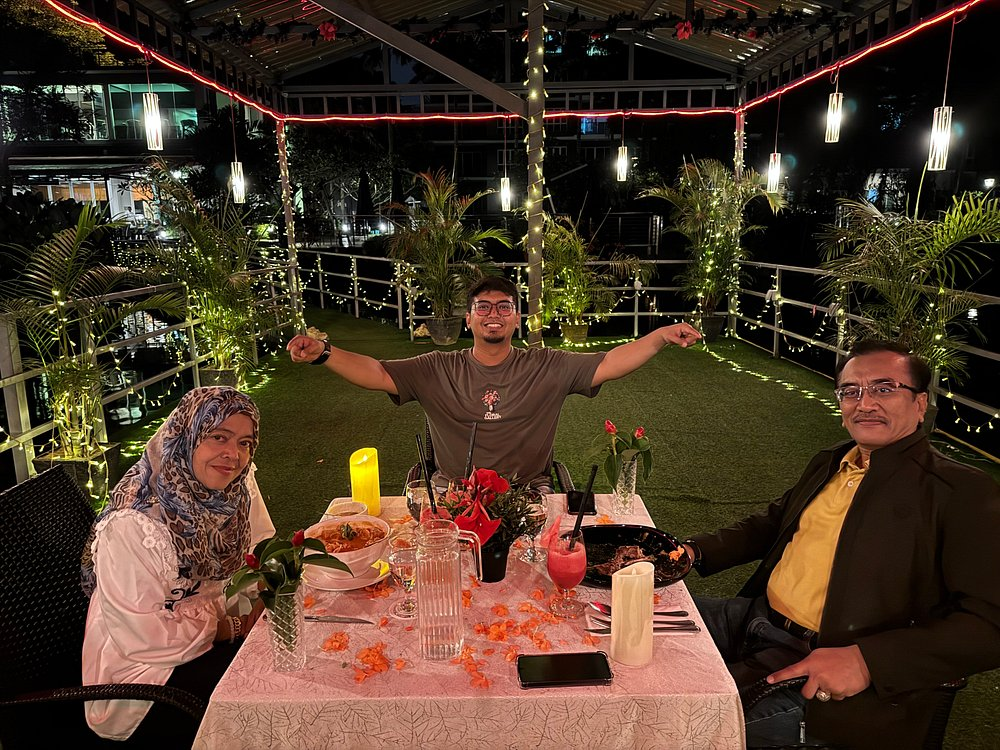

UTAR Eats
Street Food
Malay
Chinese
Indian
Famous Streets
Gallery
Food Journey
Contact
Not logged in
Log In
Log Out
Log In
×
üëÅ
Street Food Adventures
Take a bite out of Malaysia's vibrant street food culture
Best Street Food in Bukit Bintang
üìçBukit Bintang Jalan Alor
The local breakfast for Malaysian

Perfect Food Crawl Weekend
üìçCuisines The Restaurant Tui Blue
Malacca Jonker Street Food: A Heritage Flavors Tour
üìçJonker Street
How to Eat Like a Local at Malaysia
Vegetarian-Friendly Malaysian Street Food
üìç8-10, Jalan Lim Bo Seng, Kampung Jawa, 30300 Ipoh, Perak
Roti Tisu Reaches New Heights: Malaysia’s Edible Twin Tower!
üìçSri Petaling Restoran Aliff
Midnight Munchies: Where to Find Late-Night Street Food in KL
üìçKantin Mini @ Kampung Baru
Ramadan Bazaars in Malaysia: A Street Food Extravaganza
üìçPasar Datuk Keramat
Nyonya Flavors : Malaysia Peranakan Food Gems
üìçBig Baba
Festival Feasts: Foods must Try During CNY
Hokkien Mee Showdown: KL vs. Penang Style - Which Wins?